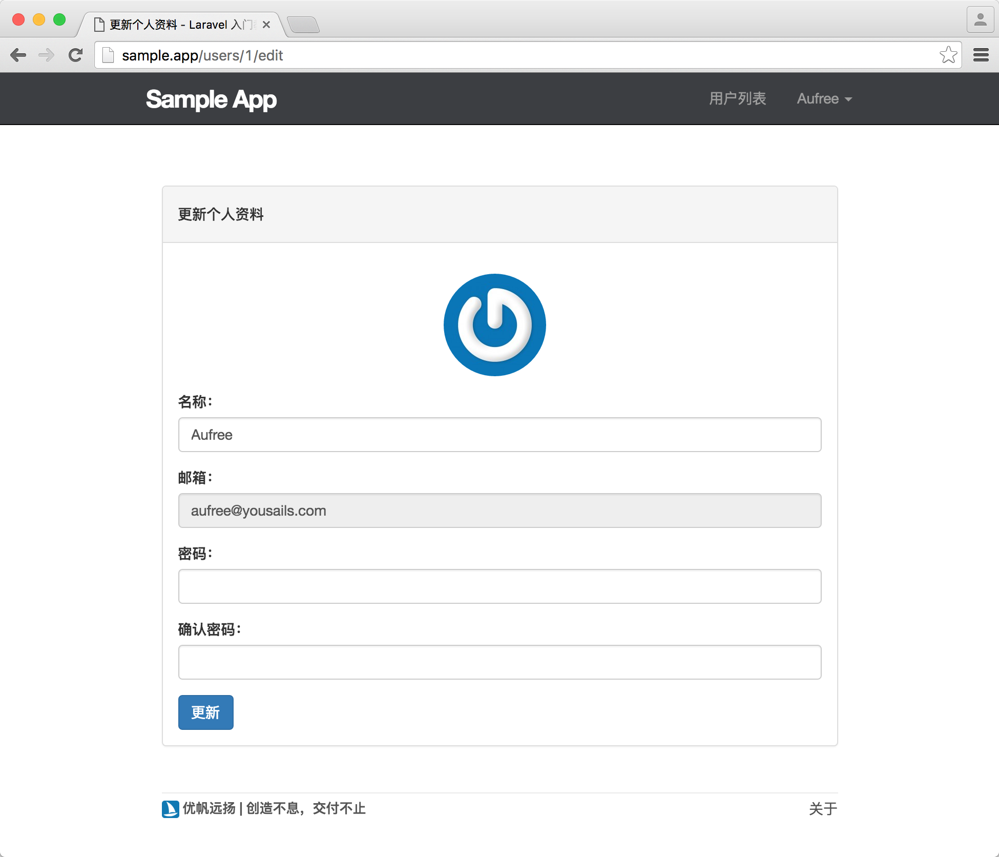
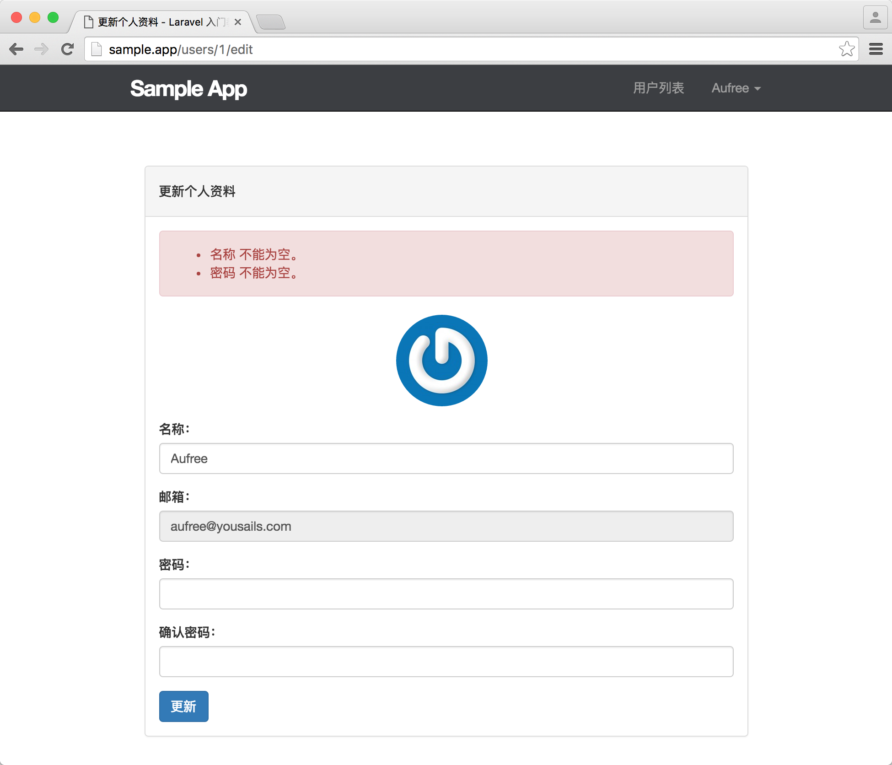

8.2. 更新用户
更新用户
本节让我们先来创建一个用户个人资料的编辑页面，让用户能够在该页面上更新自己的个人信息。
跟之前一样，我们需要先创建一个新分支，并在该分支上进行功能开发：
$ git checkout master
$ git checkout -b user-crud编辑表单
由于我们在前面构建用户展示页面时已经使用 resource 方法来为用户添加好完整的 RESTful 动作，因此我们不需要再为用户添加编辑页面的路由。但你需要知道，一个符合 RESTful 架构的用户编辑路由应该是像下面这样：
Route::get('/users/{user}/edit', 'UsersController@edit')->name('users.edit');也即是说，当我们访问 /users/1/edit 页面时，编辑的是 id 为 1 的用户资料。
接下来让我们为用户控制器上加上编辑用户的操作。
app/Http/Controllers/UsersController.php
<?php
namespace App\Http\Controllers;
.
.
.
class UsersController extends Controller
{
.
.
.
public function edit(User $user)
{
return view('users.edit', compact('user'));
}
}新增的 edit 动作主要做了以下几个操作：
- 利用了 Laravel 的『隐性路由模型绑定』功能，直接读取对应 ID 的用户实例
$user，未找到则报错； - 将查找到的用户实例
$user与编辑视图进行绑定；
在将用户数据与视图进行绑定之后，便可以在视图上通过 $user 来访问用户对象。接下来让我们接着完成用户编辑页面的构建。
resources/views/users/edit.blade.php
@extends('layouts.default')
@section('title', '更新个人资料')
@section('content')
<div class="col-md-offset-2 col-md-8">
<div class="panel panel-default">
<div class="panel-heading">
<h5>更新个人资料</h5>
</div>
<div class="panel-body">
@include('shared._errors')
<div class="gravatar_edit">
<a href="http://gravatar.com/emails" target="_blank">
<img src="{{ $user->gravatar('200') }}" alt="{{ $user->name }}" class="gravatar"/>
</a>
</div>
<form method="POST" action="{{ route('users.update', $user->id )}}">
{{ method_field('PATCH') }}
{{ csrf_field() }}
<div class="form-group">
<label for="name">名称：</label>
<input type="text" name="name" class="form-control" value="{{ $user->name }}">
</div>
<div class="form-group">
<label for="email">邮箱：</label>
<input type="text" name="email" class="form-control" value="{{ $user->email }}" disabled>
</div>
<div class="form-group">
<label for="password">密码：</label>
<input type="password" name="password" class="form-control" value="{{ old('password') }}">
</div>
<div class="form-group">
<label for="password_confirmation">确认密码：</label>
<input type="password" name="password_confirmation" class="form-control" value="{{ old('password_confirmation') }}">
</div>
<button type="submit" class="btn btn-primary">更新</button>
</form>
</div>
</div>
</div>
@stop我们在用户头像编辑的位置使用了外部链接跳转，如果用户有更换头像的需要，则可以跳转到 Gravatar 官网上手动更改。在我们提交用户更新表单之后，将由用户控制器的 update 动作来做处理，因此我们需要把表单提交的请求地址指向用户更新的 URL 上。
<form method="POST" action="{{ route('users.update', $user->id )}}">上面代码转为 HTML 后如下所示：
<form method="POST" action="http://sample.test/users/1">在 RESTful 架构中，我们使用 PATCH 动作来更新资源，但由于浏览器不支持发送 PATCH 动作，因此我们需要在表单中添加一个隐藏域来伪造 PATCH 请求。
{{ method_field('PATCH') }}转换为 HTML 代码如下所示：
<input type="hidden" name="_method" value="PATCH">在用户注册成功之后，邮箱便不允许更改，因此我们需要给邮箱输入框加上 disabled 属性来禁止用户输入：
<input type="text" name="email" class="form-control" value="{{ $user->email }}" disabled>接下来让我们再来加一点样式，优化用户编辑视图。
resources/assets/sass/app.scss
.
.
.
/* Users edit */
.gravatar_edit {
margin: 15px auto;
text-align: center;
.gravatar {
float: none;
max-width: 100px;
}
}现在的编辑页面已能正常访问，我们需要将顶部导航栏的编辑资料链接进行更改，提供给用户访问编辑资料的入口。
resources/views/layouts/_header.blade.php
<header class="navbar navbar-fixed-top navbar-inverse">
<div class="container">
<div class="col-md-offset-1 col-md-10">
<a href="/" id="logo">Sample App</a>
<nav>
<ul class="nav navbar-nav navbar-right">
@if (Auth::check())
<li><a href="#">用户列表</a></li>
<li class="dropdown">
<a href="#" class="dropdown-toggle" data-toggle="dropdown">
{{ Auth::user()->name }} <b class="caret"></b>
</a>
<ul class="dropdown-menu">
<li><a href="{{ route('users.show', Auth::user()->id) }}">个人中心</a></li>
<li><a href="{{ route('users.edit', Auth::user()->id) }}">编辑资料</a></li>
<li class="divider"></li>
<li>
<a id="logout" href="#">
<form action="{{ route('logout') }}" method="POST">
{{ csrf_field() }}
{{ method_field('DELETE') }}
<button class="btn btn-block btn-danger" type="submit" name="button">退出</button>
</form>
</a>
</li>
</ul>
</li>
@else
<li><a href="{{ route('help') }}">帮助</a></li>
<li><a href="{{ route('login') }}">登录</a></li>
@endif
</ul>
</nav>
</div>
</div>
</header>
编辑失败
现在我们已完成用户更新表单的构建，接下来需要在用户控制器加上 update 动作来处理用户提交的个人信息。
app/Http/Controllers/UsersController.php
<?php
namespace App\Http\Controllers;
.
.
.
class UsersController extends Controller
{
.
.
.
public function update(User $user, Request $request)
{
$this->validate($request, [
'name' => 'required|max:50',
'password' => 'required|confirmed|min:6'
]);
$user->update([
'name' => $request->name,
'password' => bcrypt($request->password),
]);
return redirect()->route('users.show', $user->id);
}
}我们可以看到定义的 update 方法接收两个参数，第一个为自动解析用户 id 对应的用户实例对象，第二个则为更新用户表单的输入数据。在我们接收到用户提交的信息时，需要先对用户提交的信息进行验证，最终调用 update 方法对用户对象进行更新。在用户个人资料更新成功后，我们还需要将用户重定向到个人页面，方便用户第一时间查看到自己更改后的个人信息。
这时如果我们尝试提交错误信息并进行提交，将会显示如下界面，代表表单验证功能已可正常使用。

编辑成功
现在的用户编辑功能还有两个地方需要优化：
- 在每次更改个人资料的时候都输入完整的密码，才能更新其它信息，对于不想对密码进行更新的用户，这个过程会比较繁琐；
- 更新成功之后在页面上没有进行任何提示，而是直接跳转到用户的个人页面，用户体验非常不好；
接下来让我们针对这两个问题对 update 方法进行优化。
app/Http/Controllers/UsersController.php
<?php
namespace App\Http\Controllers;
.
.
.
class UsersController extends Controller
{
.
.
.
public function update(User $user, Request $request)
{
$this->validate($request, [
'name' => 'required|max:50',
'password' => 'nullable|confirmed|min:6'
]);
$data = [];
$data['name'] = $request->name;
if ($request->password) {
$data['password'] = bcrypt($request->password);
}
$user->update($data);
session()->flash('success', '个人资料更新成功！');
return redirect()->route('users.show', $user->id);
}
} 首先，我们将用户密码验证的 required 规则换成 nullable，这意味着当用户提供空白密码时也会通过验证，因此我们需要对传入的 password 进行判断，当其值不为空时才将其赋值给 data，避免将空白密码保存到数据库中。
我们还通过会话闪存来添加用户资料更新成功后的消息提示。